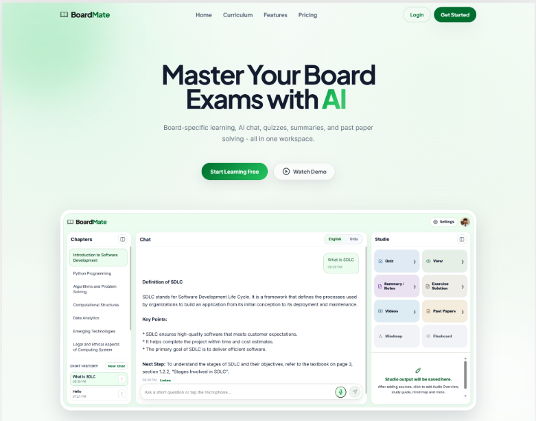
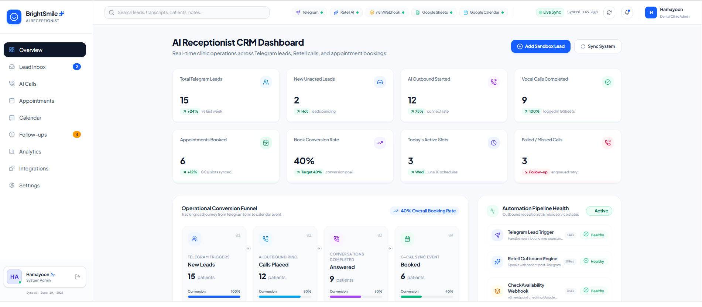
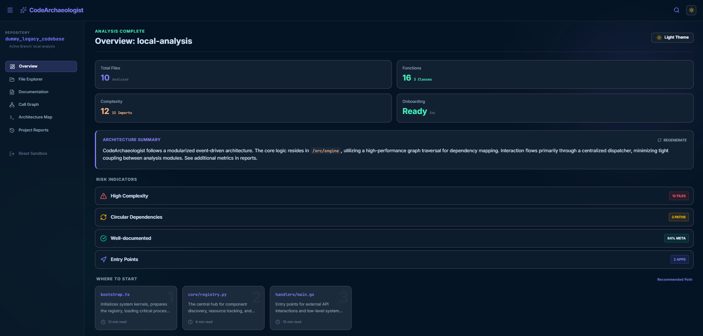

✦ INTRODUCTION
Full Stack AI Developer focused on applying AI where it creates visible value: grounded information systems, voice workflows, intelligent automation, and reliable product experiences.
PORTFOLIO // 2026
AVAILABLE FOR SELECTED WORK
BUILDING AS A FULL STACK AI
DEVELOPER_
01 // PROFILE
I’m a Full Stack AI Developer and Data Science graduate building practical AI systems, intelligent automation, and production-ready digital experiences.
I work across the complete lifecycle - from requirements and product thinking to dependable backend services, polished user interfaces, and deployment.
DOWNLOAD RÉSUMÉ ↓02 // BUILDING UNDER PRESSURE
Powered by product thinking, clean engineering, and automation that makes work move faster.
03 // ENGINEERING PROFILE
AI systems, automation, production interfaces, and practical full-stack delivery.
Full Stack AI Developer focused on applying AI where it creates visible value: grounded information systems, voice workflows, intelligent automation, and reliable product experiences.
Delivered AI automation and full-stack products with cross-functional teams. Built client-facing features, backend APIs, LLM integrations, and reusable workflows while supporting planning, testing, troubleshooting, and deployment.
CGPA 3.47 / 4.0
Python · FastAPI · React · TypeScript · LangChain · LangGraph · n8n · Retell AI · Docker · PostgreSQL · Supabase · GitHub Actions
04 // FEATURED PROJECTS
Three AI and full-stack systems built around real workflows, practical utility, and clean delivery.

AI // 01A board-specific learning workspace for Pakistani students, combining RAG retrieval, AI chat, quizzes, and curriculum-aligned help.

AI // 02An automated dental receptionist that captures leads, calls patients, checks availability, books appointments, and keeps clinic operations in sync.

AI // 03An AI-powered workspace for understanding legacy codebases through architecture mapping, risk indicators, documentation, and exploration paths.
05 // PROJECT DETAILS
A closer look at the project ideas, tools, and repositories behind the featured systems.
Grounded study support for Pakistan’s education boards.
OPEN PROJECT ↗Voice agents, bookings, and a live clinic dashboard.
OPEN PROJECT ↗Make unfamiliar systems easier to understand.
OPEN PROJECT ↗06 // COMMS
I’m open to building useful AI products, automation workflows, and ambitious digital experiences with thoughtful people.